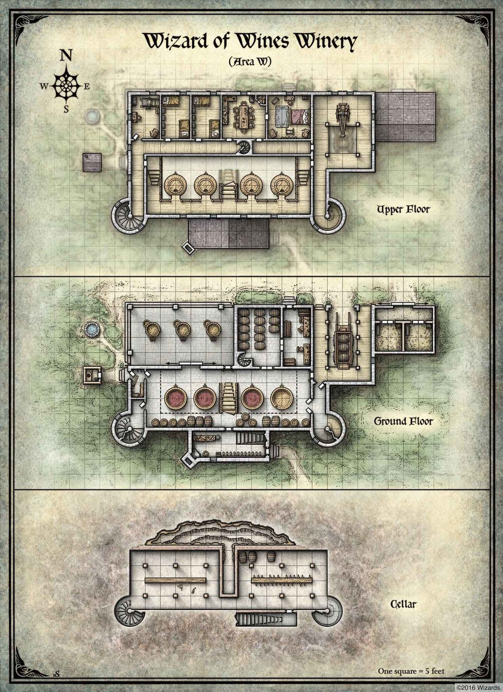

La distillerie

- Une distillerie, ou vinerie, de Bourg-Preux : un grand bâtiment avec ses cuves, ses tonneaux et une cave.
- Automne 1002 CR : poursuivi par les héros et par le guet, Rosso Dagarella s'y est caché avec ses hommes et avec Spada Rapazzoni, son prisonnier.
- Un combat épique s'y est déroulé. Spada a été délivré, mais Rosso Dagarella s'est enfui.
- Voir aussi : Le repaire de Rosso Dagarella, le repaire où Spada était enfermé avant.